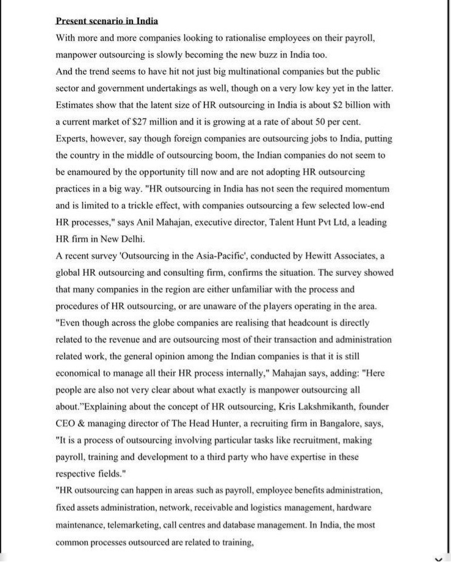
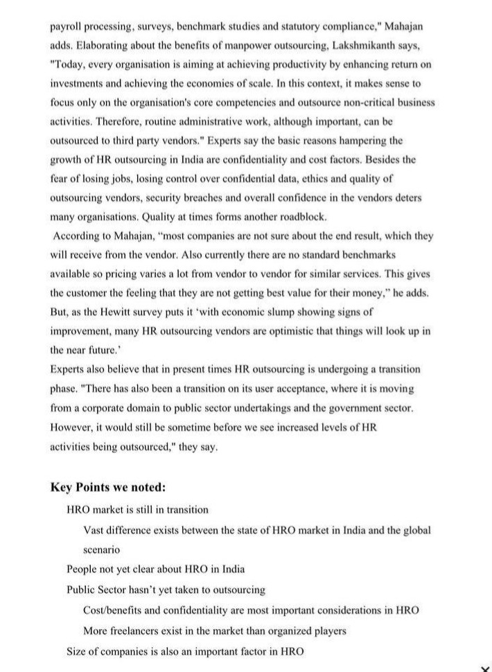
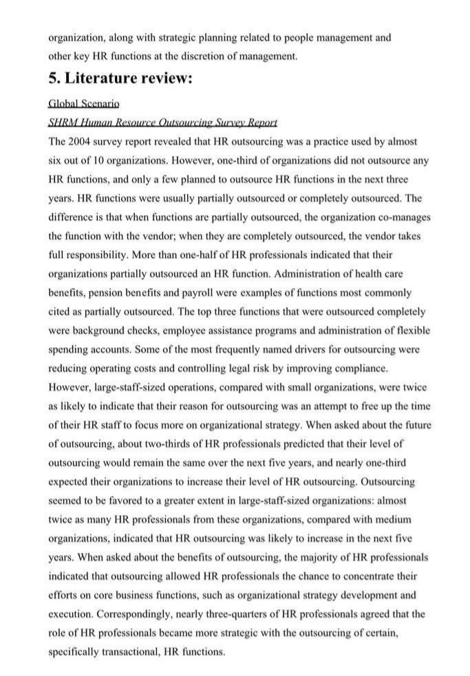

Leadership Research & Citations
A landmark study that shaped early thinking on Human Resource Outsourcing — with expert commentary by Anil Mahajane, MBA (IIFT), Executive Director, Talent Hunt Pvt. Ltd.
Overview
As organisations across the Asia-Pacific region began rethinking how Human Resources could contribute more strategically to business, Hewitt Associates conducted one of the region's early studies on Human Resource Outsourcing (HRO).
The research examined outsourcing trends, organisational readiness, business drivers and the evolving role of HR across Asia-Pacific economies. At a time when HR outsourcing was still an emerging concept in India, the findings generated significant discussion among business leaders, HR professionals and consulting organisations.
One such industry feature included expert commentary from Anil Mahajane, MBA (IIFT), then Executive Director of Talent Hunt Pvt. Ltd., providing practical insights into how the research findings related to the Indian business environment.
Research Study
Research Context
During the early 2000s, organisations increasingly sought to focus on their core business while improving operational efficiency. Human Resource Outsourcing emerged as a strategic option for organisations wishing to streamline administrative HR activities without compromising service quality.
The Hewitt Associates survey found that although multinational organisations were adopting HR outsourcing more rapidly, the overall Asia-Pacific market remained at different stages of maturity. The study highlighted increasing interest in outsourcing transactional HR functions while also identifying concerns regarding:
Original Industry Feature
Published industry feature discussing the Hewitt Associates survey — with expert commentary by Anil Mahajane, MBA (IIFT).



Industry feature discussing the Hewitt Associates Asia-Pacific HR Outsourcing Survey with expert commentary by Anil Mahajane, MBA (IIFT).
Professional Commentary
Drawing upon practical executive search and HR consulting experience, Anil Mahajane, MBA (IIFT) observed that while HR outsourcing had significant long-term potential, India was still in the early stages of adoption. His observations reflected the realities of the market at that time. Key themes included:
These observations represented practical business insights during a period when HR outsourcing was still developing as a professional service industry in India.
Key Research Findings
Looking Back
More than two decades later, many of the issues discussed in both the Hewitt research and the accompanying industry commentary remain remarkably relevant. Today's HR outsourcing ecosystem has evolved into a mature industry encompassing:
Artificial Intelligence, cloud-based HR platforms and digital transformation have significantly changed how HR services are delivered. However, organisations continue to evaluate outsourcing partners based on many of the same strategic considerations identified during the early years of HR outsourcing:
Why This Research Citation Matters
This citation documents an important period in the evolution of Human Resource Outsourcing across Asia-Pacific — and how international research findings were interpreted within the Indian business environment.
The publication demonstrates an early engagement with evidence-based thinking in executive search, talent management and workforce strategy, reflecting a commitment to combining practical industry experience with globally recognised research.
It also highlights how Anil Mahajane, MBA (IIFT) was identified as an expert voice on talent management and HR strategy at a formative time in India's professional services industry.
About the Author